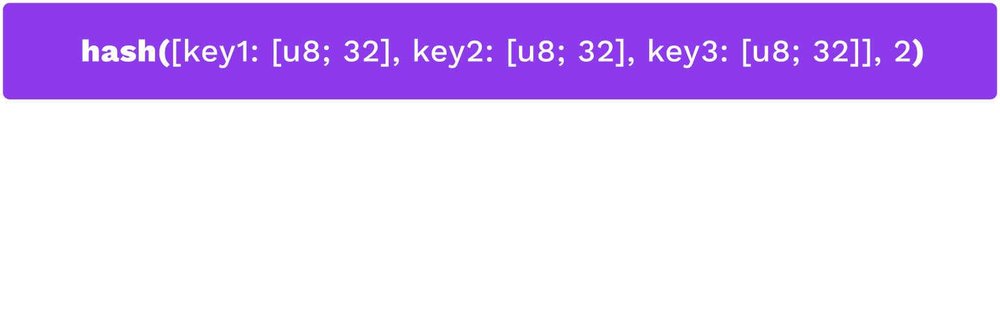

<!DOCTYPE html>
<html lang="en">
  <head>
    <meta charset="utf-8" />
    <meta name="viewport" content="width=device-width, initial-scale=1.0, maximum-scale=1.0, user-scalable=no" />

    <title>Hash Functions</title>
    <link rel="shortcut icon" href="./../../../favicon.ico" />
    <link rel="stylesheet" href="./../../../dist/reset.css" />
    <link rel="stylesheet" href="./../../../dist/reveal.css" />
    <link rel="stylesheet" href="./../../../assets/styles/polkadot-theme.css" id="theme" />
    <link rel="stylesheet" href="./../../../css/highlight/shades-of-purple.css" />

    <link rel="stylesheet" href="./../../.././assets/styles/custom-classes.css" />
    <link rel="stylesheet" href="./../../.././assets/styles/polkadot-theme-base.css" />
    <link rel="stylesheet" href="./../../.././assets/styles/PBA-theme.css" />
    <link rel="stylesheet" href="./../../.././plugin/design-system/index.css" />

  </head>
  <body class="site">
    <header class="site-header">
      <a href="">
        
      </a>
      
    </header>
    <main class="site-reveal reveal">
      <article class="slides">
        <section  data-markdown><script type="text/template">

# Hash Functions
</script></section><section  data-markdown><script type="text/template">
## Introduction

We often want a succinct representation of some data with the expectation that we are referring to the same data.

A "fingerprint".
</script></section><section  data-markdown><script type="text/template">
## Hash Function Properties

1. Accept unbounded size input
1. Map to a bounded output
1. Be fast to compute
1. Be computable strictly one-way (difficult to find a pre-image for a hash)
1. Resist pre-image attacks (attacker controls one input)
1. Resist collisions (attacker controls both inputs)
</script></section><section  data-markdown><script type="text/template">
## Hash Function API

A hash function should:

- Accept an unbounded input size (`[u8]` byte array)
- Return a fixed-length output (here, a 32 byte array).

```rust
fn hash(s: &[u8]) -> [u8; 32];
```
</script></section><section  data-markdown><script type="text/template">
## Example

**Short input (5 bytes):**

```text
hash('hello') =
	0x324dcf027dd4a30a932c441f365a25e86b173defa4b8e58948253471b81b72cf
```

**Large input (1.2 MB):**

```text
hash(polkadot_runtime-v9190.compact.compressed.wasm) =
	0xc4d194054f03dc7155ccb080f1e6d8519d9d6a83e916960de973c93231aca8f4
```
</script></section><section  data-markdown><script type="text/template">
## Speed

Some hash functions are designed to be slow.

These have applications like password hashing, which would slow down brute-force attackers.

For our purposes, we generally want them to be fast.
</script></section><section  data-markdown><script type="text/template">
## Speed

<center>

</center>
</script></section><section  data-markdown><script type="text/template">
## Non-Cryptographic Hash Functions

Non-cryptographic hash functions provide weaker guarantees in exchange for performance.

They are OK to use when you know that the input is not malicious.

**If in doubt, use a cryptographic hash function.**
</script></section><section  data-markdown><script type="text/template">
## One Way

Given a hash, it should be difficult to find an input value (pre-image) that would produce the given hash.

That is, given `H(x)`, it should be difficult to find `x`.

<aside class="notes"><p>We sometimes add random bytes to pre-images to prevent guesses based on context (e.g., if you are hashing &quot;rock, paper, scissors&quot;, then finding a pre-image is trivial without some added randomness.)</p>
</aside></script></section><section  data-markdown><script type="text/template">
## Second Pre-Image Attacks

Given a hash and a pre-image, it should be difficult to find _another_ pre-image that would produce the same hash.

Given `H(x)`, it should be difficult to find any `x'`

such that `H(x) == H(x')`.

<aside class="notes"><p>Since most signature schemes perform some internal hashing, this second pre-image would also pass signature verification.</p>
</aside></script></section><section  data-markdown><script type="text/template">
## Collision Resistance

It should be difficult for someone to find two messages that hash to the same value.

It should be difficult to find an `x` and `y`

such that `H(x) == H(y)`.
</script></section><section  data-markdown><script type="text/template">
## Collision Resistance

**Difference from second pre-image attack:**

In a second pre-image attack, the attacker only controls one input.

In a collision, the attacker controls both inputs.

They may attempt to trick someone into signing one message.

<aside class="notes"><p>Attacker has intention to impersonate the signer with the other.</p>
</aside></script></section><section  data-markdown><script type="text/template">
## Birthday Paradox

_With 23 people, there is a 50% chance that two share a birthday._

Need to compare each output with every other, not with a single one.

Result: Hash function security is only half of the bit space.

<aside class="notes"><p>e.g., a 256 bit hash output yields 2^128 security</p>
</aside></script></section><section  data-markdown><script type="text/template">
## Hash Functions Available in Substrate

<widget-text center>

Hash functions are available in Substrate
as part of the runtime primitives.

- Blake2 (cryptographic)
- XX
- Keccak (cryptographic)

<aside class="notes"><p>Substrate also implements traits that provide 160, 256, and 512 bit outputs for each hasher.</p>
<p>Exercise: Write your own benchmarking script that compares the performance of these algorithms with various input sizes.</p>
</aside></script></section><section  data-markdown><script type="text/template">
## Hash Function Selection

<widget-text center>

When users have control of the input, use cryptographic hash functions (in Substrate, Blake2).

- Non-cryptographic (TwoX) is faster.
- Safe _only_ when the users cannot select the pre-image.

<aside class="notes"><p>Only safe when the users cannot select the pre-image, e.g. a system-assigned index.</p>
<p>Keccak is available for Ethereum compatibility.</p>
</aside></script></section><section  data-markdown><script type="text/template">
<!-- .slide: data-background-color="#8D3AED" -->

# Applications
</script></section><section  data-markdown><script type="text/template">
## Database Keys

Hash functions can be used to generate deterministic and unique lookup keys for databases.

<aside class="notes"><p>Given some fixed property, like an ID and other metadata the user knows beforehand, they can always find the database entry with all of the content they are looking for.</p>
</aside></script></section><section  data-markdown><script type="text/template">
## Data Integrity Checks

Members of a peer-to-peer network may host and share file chunks rather than large files.

In [Bittorrent](https://en.wikipedia.org/wiki/BitTorrent), each file chunk is hash identified so peers can _request and verify_ the chunk is a member of the larger, _content addressed_ file.

<aside class="notes"><p>The hash of the large file can also serve as a signal to the protocol that transmission is complete.</p>
</aside></script></section><section  data-markdown><script type="text/template">
## Account Abstractions

Public keys can be used to authorize actions by signing of instructions.

The properties of hash functions allow other kinds of representations.
</script></section><section  data-markdown><script type="text/template">
## Public Key Representation

Because hashes serve as unique representations of other data, that other data could include public keys. A system can map a plurality of key sizes to a fixed length (e.g. for use as a database key).

For example, the ECDSA public key is 33 bytes:

```text
Public key (hex):  0x02d82cdc83a966aaabf660c4496021918466e61455d2bc403c34bde8148b227d7a
Hash of pub key:   0x8fea32b38ed87b4739378aa48f73ea5d0333b973ee72c5cb7578b143f82cf7e9
                                                                                     ^^
```
</script></section><section  data-markdown><script type="text/template">
## Multi-Signatures



<aside class="notes"><p>By hashing a concatenation of several public keys, a system can create new IDs that require signature thresholds to authorize activity.</p>
</aside></script></section><section  data-markdown><script type="text/template">
## Internal System IDs

Modules within a system may have their own information stored in other parts of the system.

Storage they authorize use of by the module's internal logic.

<aside class="notes"><p>The hash of some input (e.g. a byte-string representing the module) can be used to identify a particular module within a system.</p>
</aside></script></section><section  data-markdown><script type="text/template">
## Commitment Schemes

It is often useful to commit to some information without storing or revealing it:

- A prediction market would want to reveal predictions only after the confirming/refuting event occurred.
- Users of a system may want to discuss proposals without storing the proposal on the system.

However, participants should not be able to modify their predictions or proposals.
</script></section><section  data-markdown><script type="text/template">
## Commit-Reveal

1. Share a hash of data as a commitment ($c$)
1. Reveal the data itself ($d$)

It is normal to add some randomness to the message to expand the input set size.

$$ hash(message + randomness) => commitment $$

<widget-text style="font-size: smaller;">

Commitment: `0x97c9b8d5019e51b227b7a13cd2c753cae2df9d3b435e4122787aff968e666b0b`
</script></section><section  data-markdown><script type="text/template">
## Reveal

Message with some added randomness:

<widget-text style="font-size: smaller;">

> "I predict Boris Johnson will resign on 7 July 2022. facc8d3303c61ec1808f00ba612c680f"
</script></section><section  data-markdown><script type="text/template">
## Data Identifiers

Sometimes people want to store information in one place and reference it in another. For reference, they need some "fingerprint" or digest.

As an example, they may vote on executing some privileged instructions within the system.

The hash of the information can succinctly represent the information and commit its creator to not altering it.
</script></section><section  data-markdown><script type="text/template">
## Data Structures (in Brief)

This is the focus of the next lecture.

<aside class="notes"><p>For now, just a brief introduction.</p>
</aside></script></section><section  data-markdown><script type="text/template">
## Pointer-Based Linked Lists

Pointer-based linked lists are a foundation of programming.

But pointers are independent from the data they reference, so the data can be modified while maintaining the list.

That is, pointer-based linked lists are not tamper evident.
</script></section><section  data-markdown><script type="text/template">
## Hash-Based Linked Lists

Hash-based lists make the reference related to the data they are referencing. The properties of hash functions make them a good choice for this application.

Any change at any point in the list would create downstream changes to all hashes.
</script></section><section  data-markdown><script type="text/template">
## Merkle Trees


<aside class="notes"><p>Each leaf is the hash of some data object and each node is the hash of its children.</p>
</aside></script></section><section  data-markdown><script type="text/template">
## Proofs

Merkle trees allow many proofs relevant to the rest of this course, e.g. that some data object is a member of the tree without passing the entire tree.

**_More info in the next lecture._**
</script></section>
      </article>
    </main>

    <script src="./../../../dist/reveal.js"></script>
    <script src="./../../../plugin/markdown/markdown.js"></script>
    <script src="./../../../plugin/highlight/highlight.js"></script>
    <script src="./../../../plugin/zoom/zoom.js"></script>
    <script src="./../../../plugin/notes/notes.js"></script>
    <script src="./../../../plugin/math/math.js"></script>

    <script type="module">
      import DesignSystem from "./../../../plugin/design-system/design-system.js"

      function extend() {
        var target = {};
        for (var i = 0; i < arguments.length; i++) {
          var source = arguments[i];
          for (var key in source) {
            if (source.hasOwnProperty(key)) {
              target[key] = source[key];
            }
          }
        }
        return target;
      }

      // default options to init reveal.js
      var defaultOptions = {
        controls: true,
        progress: true,
        history: true,
        center: true,
        transition: 'default', // none/fade/slide/convex/concave/zoom
        plugins: [
          RevealMarkdown,
          RevealHighlight,
          RevealZoom,
          RevealNotes,
          RevealMath,
          DesignSystem
        ]
      };

      // options from URL query string
      const queryOptions = Reveal().getQueryHash() || {};

      const options = extend(defaultOptions, {"width":1400,"height":900,"margin":0,"minScale":0.2,"maxScale":2,"transition":"none","controls":true,"progress":true,"center":true,"slideNumber":true,"backgroundTransition":"fade"}, queryOptions);
      options.baseUrl = '';
      Reveal.initialize(options);
    </script>
  </body>
</html>
